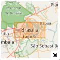
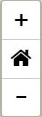
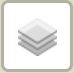
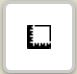
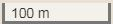
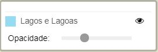

MiniMap
Auxilia na localização sobre o mapa, mostrando o mapa com uma aproximação menor que o mapa principal.

Zoom
Aproximação, Extenção Inicial e Diminuição.

Mapas de Base e Camadas
Diversos mapas de base, camadas de dados e fotos aéreas.
As camadas se sobrepõem na ordem que são habilitadas.
As camadas se sobrepõem na ordem que são habilitadas.

Medição
Ferramenta para medições diversas: distância, área e coordenada.

Escala
Escala do mapa que atualiza em tempo real de acordo com o nível de zoom, demonstra que tamanho no mapa corresponde a determinada medida real.

Legenda
Legenda das camadas, legenda habilida e desabilita, controla opacidade e visualização das camadas.
